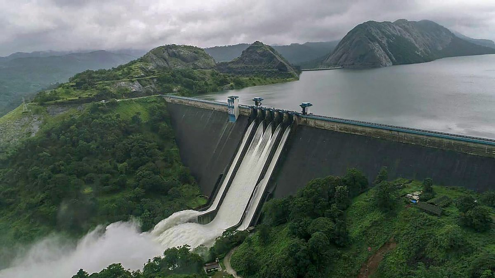

Nadukani
Nadukani Hills, Kottayam. Perched atop Nadukani, the mountains and the rivers seem like ancient beings, lying in deep slumber with a host of greenery on all sides as spectators.
Read More

Idukki Dam
The Idukki Dam is a double curvature Arch dam constructed across the Periyar River in a narrow gorge between two granite hills locally known as Kuravan and Kurathi in Mariyapuram village in Idukki District in Kerala, India.
Read More